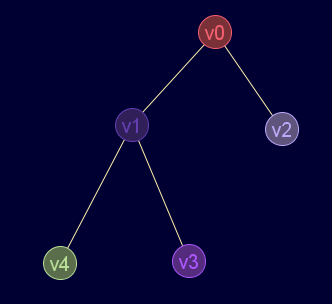
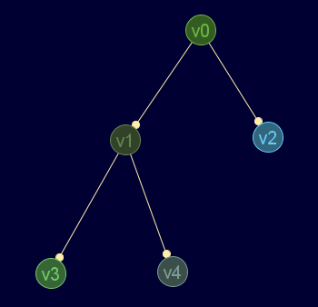

Descripción
Comprueba si el grafo es una arborescencia (árbol dirigido con raíz)
Cadena de entrada
gr_arborescencia
Cadena de salida
GRAFO.arborescencia
Uso
gr_arborescencia(<grafo>)
Valor devuelto
Ejemplos
gr_nuevo([[0,1,1,0,0],[1,0,0,1,1],[1,0,0,0,0],[0,1,0,0,0],[0,1,0,0,0]],falso)
Grafo en JMEScriptGUI con visor de grafos v0.1:

gr_arborescencia(gr_nuevo([[0,1,1,0,0],[1,0,0,1,1],[1,0,0,0,0],[0,1,0,0,0],[0,1,0,0,0]],falso))
RealDoble: -1 (no es dirigido)
¿es arborescencia?:Grafo en JMEScriptGUI con visor de grafos v0.1:

gr_arborescencia(gr_nuevo([[0,1,1,0,0],[0,0,0,1,1],[0,0,0,0,0],[0,0,0,0,0],[0,0,0,0,0]],verdadero))
RealDoble: 0 (v0 raíz)
Véase también…
Desde / Última modificación
v0.6.2.0